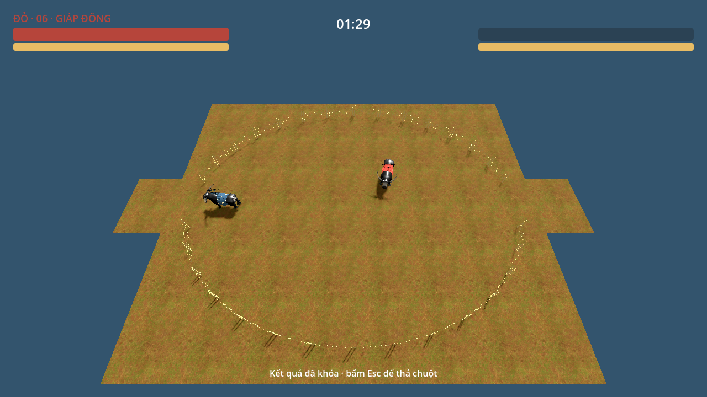
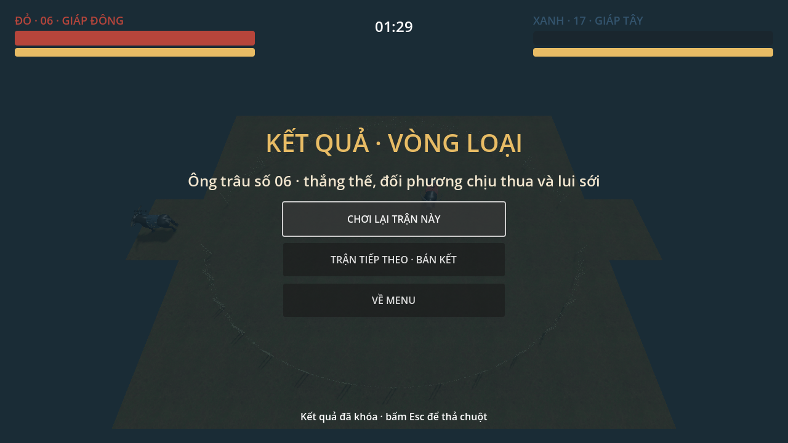

Đọc theo vai trò
Mới vào / tester: Gameplay trong 1 phút → Nút bấm → Các đòn → Vòng đọc đòn.
Game designer: Khi đòn chạm → Timeline → Cân bằng → Đánh giá trước phát hành.
Lập trình viên: Cho lập trình viên → Tính thử → Phụ lục (DEC-17…21).
Gameplay trong 1 phút
Bạn điều khiển trâu, tìm lúc đối thủ sơ hở để húc (Basic attack) Chuột trái và chọn cách đỡ khi họ đánh tới.
- Làm đối thủ hết Khí thế (SPIRIT) là thắng. Mỗi trâu có 100 điểm và thanh này không tự hồi.
- Bạn có tối đa 90 s để thắng một trận. Đừng ra đòn liên tục: cần nghỉ để hồi Sức (Stamina).
- Thấy đối thủ cúi đầu, bạn có thể gạt rồi húc lại. Húc báo trước (Telegraph) 0,25 s; Hổ lao (Dash attack) Space ra ngay nên phải đoán.
- Bốn lựa chọn khắc nhau: Húc trúng trâu không đỡ. Ghìm (Block) Chuột phải chặn Húc. Gạt sừng (Parry) G trị Húc, nhưng gạt hụt thì bị phạt. Đi vòng đánh sườn thắng Ghìm.
Ai khắc ai
Hàng là lựa chọn của A, cột là lựa chọn của B. Các số mất là Khí thế; chi phí giữ Ghìm tính bằng Sức.
| A làm gì ↓ / B làm gì → | Không đỡ | Ghìm (Block) Chuột phải A phía trước | Gạt sừng (Parry) G Đúng lúc | Gạt hụt Bấm sớm |
|---|---|---|---|---|
| Húc Chuột trái | A lợi: B mất 18, choáng 0,30 s | Đỡ được: mất ×0,45 = 8, không choáng | B lợi: mất 0, A choáng 0,50 s, B có Phản đòn (Counter attack) Chuột trái 23 | A lợi: B sơ hở 0,60 s, trúng đầy đủ 18 |
| Hổ lao Space | A lợi: B mất 14 | Đỡ được: mất ×0,45, không choáng | B lợi: A choáng 0,70 s | A lợi: trúng đầy đủ |
| Đi vòng, húc sườn / lưng Chuột trái | A lợi: ×1,25 = 23 | A lợi: Ghìm không che, 23 | A lợi: gạt không tác dụng, 23 | A lợi: 23 |
| Chờ, không ra đòn | — | A lợi: B hao 12 Sức/s | — | A lợi: B sơ hở 0,60 s, A húc phạt |
Hai trâu cùng húc thẳng vào nhau → Khóa sừng (Clash), không ai mất Khí thế.
Vòng lặp trận
Nút bấm và điểm mới so với GDD v0.7
Mọi nút trong trận ở một bảng; cột cuối cho biết nút nào mới hoặc đã đổi so với GDD v0.7.
| Nút | Đòn | Làm gì | So với GDD v0.7 |
|---|---|---|---|
W A S D | Đi theo hướng camera; đi ngang ×0,7, lùi ×0,5 | Giữ nguyên | |
Rê chuột | Xoay camera và thân trâu (tối đa 540°/s) | Giữ nguyên | |
Chuột trái | Đòn chính: 18 Khí thế, 20 Sức | Đổi: lấy đà 0,12 → 0,25 s; húc hụt hồi 0,20 → 0,40 s; sừng sáng vàng | |
Chuột trái trong 0,5 s sau khi gạt trúng | Húc ra nhanh (lấy đà 0,08 s), mạnh ×1,3 = 23 | Mới | |
Space | Lao 3,6 m, ra ngay; 14 Khí thế, 28 Sức | Giữ nguyên; thêm sừng sáng đỏ | |
Chuột phải (giữ) | Đỡ phía trước: chỉ mất ×0,45, không choáng; tốn 12 Sức/s | Giữ nguyên | |
G | Bấm đúng lúc đòn tới (thế gạt 0,15 s): mất 0, đối thủ choáng 0,50 s; hụt thì sơ hở 0,60 s; 10 Sức | Mới; bấm được cả khi đang giữ Ghìm | |
Giữ W A S D về phía đối thủ (trong khóa sừng) | Dồn thanh khóa sừng | Giữ nguyên | |
Chuột trái (trong khóa sừng) | +35 về phía mình; thua Nhả | Giữ nguyên | |
Chuột phải (trong khóa sừng) | Trúng lúc đối thủ đang móc: họ mất 12 | Giữ nguyên | |
Esc | LAN: đối phương phải đồng ý | Giữ nguyên |
Luật khác đã đổi (không gắn với nút)
| Luật | GDD v0.7 | Bây giờ |
|---|---|---|
Đánh sườn / lưng (Flank / Backstab) | Góc chỉ quyết định Ghìm che được không | ×1,25 khi đánh lệch > 60° (sườn 60–120°, lưng > 120°). |
Thưởng không nhân dồn | Dồn rào ×1,5 | Dồn rào, sườn/lưng, phản đòn chỉ lấy thưởng lớn nhất; một cú tối đa 27. Ví dụ húc sườn trâu đang bị dồn rào: chỉ tính ×1,5 → 27, không nhân thêm ×1,25. |
Khựng (Hitstop) | Không có | Trúng 4 khung hình; gạt / phản / khóa sừng 6 khung hình. |
Báo trước (Telegraph) | Chỉ cúi đầu | Sừng sáng theo màu đòn, chữ nổi, âm thanh. |
AI gạt sừng | Không gạt | EASY 0%, NORMAL 15%, HARD 25%; phản đòn 0 / 50 / 100%. |
DEC-17…21, đã chốt, chưa code. Chi tiết và lý do ở mục Cân bằng và Phụ lục.
Thuật ngữ
Gặp từ chưa quen, bạn có thể tra ở đây rồi quay lại xem đòn.
| Tên trong game | Thuật ngữ gamer | Nghĩa |
|---|---|---|
Khí thế | (SPIRIT) | Thanh quyết định thắng thua; về 0 là chịu thua, không tự hồi. |
Sức | (Stamina) | Năng lượng để ra đòn; tự hồi khi nghỉ. |
Húc Chuột trái | (Basic attack) | Đòn chính: cúi đầu lấy đà rồi húc, mạnh nhất (18). |
Hổ lao Space | (Dash attack) | Lao thẳng 3,6 m, ra đòn ngay không báo trước, yếu hơn (14). |
Ghìm Chuột phải | (Block) | Giữ chuột phải để đỡ: mất ít Khí thế, an toàn, không cần canh lúc. |
Gạt sừng G | (Parry) | Bấm G đúng lúc đòn tới: không mất gì, đối thủ bị choáng. |
Phản đòn Chuột trái | (Counter attack) | Cú húc ngay sau khi gạt trúng: ra nhanh, mạnh hơn (23). |
Khóa sừng | (Clash) | Hai trâu cùng ra đòn thẳng vào nhau (Húc hoặc Hổ lao) thì mắc sừng, đấu trí bằng Đẩy / Móc / Nhả. |
Đẩy W A S D / Móc Chuột trái / Nhả Chuột phải | (Push / Hook / Release) | Ba lựa chọn trong khóa sừng, khắc nhau kiểu oẳn tù tì. |
Choáng | (Stun) | Không điều khiển được trong chốc lát. |
Bất tử | (Invincibility / i-frames) | Vừa trúng đòn thì miễn đòn 0,45 s. |
Đẩy lùi | (Knockback) | Bị hất lùi khi trúng đòn. |
Dồn rào | (Pinned / cornered) | Bị ép sát rào: mất nhiều Khí thế hơn (×1,5). |
Đánh sườn / lưng | (Flank / Backstab) | Đánh vào bên hông hoặc sau lưng: ×1,25, không đỡ được. |
Mất Khí thế khi Ghìm | (Chip damage) | Đỡ rồi vẫn mất một phần nhỏ (8 thay vì 18). |
Báo trước | (Telegraph) | Dấu hiệu đòn sắp ra (cúi đầu, sừng sáng, tiếng thở). |
Chuẩn bị / Gây đòn / Hồi | (Startup / Active / Recovery) | Ba pha của một đòn. |
Hồi chiêu | (Cooldown) | Thời gian chờ trước khi dùng lại đòn. |
Đánh hụt / Phạt đòn hụt | (Whiff / Whiff punish) | Đánh trượt thì bị đối thủ đánh lại lúc đang hồi. |
Nhớ phím | (Input buffer) | Bấm sớm một chút vẫn được ghi nhận. |
Khựng | (Hitstop) | Cả trận đứng hình rất ngắn khi va chạm, cho cảm giác lực. |
Đứng Ghìm mãi | (Turtling) | Chỉ đỡ mà không đánh. |
Đoán ý | (Mind game / mix-up) | Chọn đòn dựa trên đoán đối thủ sẽ làm gì. |
Một trận đấu
Bạn vào sới, đấu một trận ngắn rồi xem kết quả; chơi Solo thì gặp AI khó dần qua ba trận.


Ba cách kết thúc (xét theo thứ tự)
Cả hai cùng về 0 Khí thế (SPIRIT) trong một khung hình (1/60 s), hoặc hết giờ mà bằng nhau tuyệt đối. Bốc thăm theo mã trận, diễn hoạt ≤ 2 s. Trận nào cũng có bên thắng.
Một trâu Khí thế ≤ 0 thì quay đầu lui sới; bên kia thắng thế.
Hết 90 s; nếu đang khóa sừng thì giải khóa trước, rồi bên còn nhiều Khí thế hơn thắng.
Solo: ba trận, AI khó dần
| Trận | Sới | AI | Người chơi học |
|---|---|---|---|
L01 Vòng loại | Đất khô | EASY | Đi, húc, hổ lao, ghìm, gạt sừng (Parry) G, khóa sừng (5 lời nhắc; lời nhắc gạt sừng chưa chốt) |
L02 Bán kết — sân lầy | Bùn A | NORMAL | Quản lý Sức (Stamina), né bùn (tốc ×0,8), tránh bị dồn rào (Pinned / cornered) |
L03 Chung kết | Bùn A + B | HARD | Căn góc, thắng khóa sừng, dồn đối thủ tới lúc chịu thua |
Thua trận nào (kể cả thua bốc thăm) thì chơi lại trận đó. LAN 1v1 dùng đúng bộ luật này, host quyết định mọi kết quả.
Điều khiển
Bạn dùng phím để đi và chuột để xoay trâu, ra đòn hoặc đỡ. Camera bám sau trâu, nghiêng 45°. Thân xoay tối đa 540°/s; phím hiện cố định.
Bảng đủ nút ở mục Nút bấm; bảng này thêm điều kiện để bấm được.
| Phím | Hành động | Trong khóa sừng (Clash) | Điều kiện |
|---|---|---|---|
W A S D | Đi theo hướng camera. Ngang ×0,7, lùi ×0,5 | Giữ hướng về đối thủ = Đẩy | — |
Chuột | Xoay nhìn, xoay thân | Khóa (đối mặt) | — |
Chuột trái | Húc (Basic attack) · HORN | Móc (HOOK) | Đủ 20 Sức (Stamina), hết hồi chiêu (Cooldown), không đang ghìm (Block) |
Space | Hổ lao (Dash attack) · DASH | Không dùng | Đủ 28 Sức, hết hồi chiêu |
Chuột phải (giữ) | Ghìm · GUARD | Vừa nhấn = Nhả (RELEASE) | Sức ≥ 10; hao 12 Sức/s |
G | Gạt sừng (Parry) · PARRY MỚI | Không dùng | 10 Sức, hồi chiêu 0,8 s; bấm được cả khi đang Ghìm |
Esc | Tạm dừng | — | LAN: đối phương phải đồng ý |
Nhớ phím (Input buffer): bấm Húc/Hổ lao sớm tối đa 0,10 s vẫn được ghi nhận; không xếp hàng nhiều đòn. Nếu bấm cùng khung hình, Húc được chọn trước Hổ lao. Trong khóa sừng, Nhả được chọn trước Móc.
Hai thanh tài nguyên
Bạn cần giữ Khí thế (SPIRIT) để còn đấu và chừa Sức (Stamina) để kịp đỡ hoặc ra đòn.
Mất khi trúng đòn, thua thế trong khóa sừng (Clash), nhả sai lúc. Không hồi (DEC-12). Về 0 là chịu thua. Khoảng 6 cú húc (Basic attack) Chuột trái trúng để thắng.
Chi phí Sức: Húc 20; Hổ lao (Dash attack) Space 28.
Ghìm (Block) Chuột phải 12/s; Gạt sừng (Parry) G 10.
Đẩy 15/s; Móc 20. Hồi 18/s sau 0,75 s không tiêu. Tối đa ~5 cú húc liền rồi phải lùi hồi sức. Sức về 0 thì Ghìm tự ngắt. Lực đẩy bằng 0 và không móc được.
100 Sức tiêu nhanh thế nào?
Minh họa chi phí: khoảng 5 cú húc là cạn. Hồi 18/s sau 0,75 s không tiêu.
Mấy cú thì thắng
Cùng một thanh 100 Khí thế, nếu chỉ trúng một loại cú. Mỗi ô là một cú; ô cuối chạm hết thanh.
Ô nhạt: cú cuối chỉ cần làm mất phần còn lại.
Các đòn
Bạn chọn Húc (Basic attack) Chuột trái để đánh gần, Hổ lao (Dash attack) Space để áp sát, Ghìm (Block) Chuột phải để đỡ chắc hoặc Gạt sừng (Parry) G khi đọc được đòn. Cùng thao tác trong cùng tình huống luôn cho cùng kết quả.
Húc (Basic attack) Chuột trái
Dùng khi: Đối thủ đứng trong tầm và không đỡ.
- Sát thương
- 18 Khí thế (SPIRIT)
- Chi phí
- 20 Sức (Stamina) · hồi chiêu (Cooldown) 0,75 s
- Tầm
- Đầu cách thân đối thủ ≤ 0,5 m.
Đối thủ nằm trong góc ±40° quanh hướng mặt bạn. - Chuẩn bị
- 0,25 s MỚI
- Gây đòn
- 0,18 s
- Hồi
- 0,20 s · hụt: 0,40 s MỚI
- Di chuyển
- Tốc độ đi ×0,30 khi đang ra đòn, ×0,50 khi đang hồi
Hổ lao (Dash attack) Space
Dùng khi: Áp sát từ xa hoặc bắt đối thủ đoán.
- Sát thương
- 14 Khí thế
- Chi phí
- 28 Sức · hồi chiêu 1,2 s
- Quãng lao
- Tốc độ 16,25 m/s.
Lao 0,22 s, đi được ≈ 3,6 m. - Trúng khi
- Trong lúc lao, đầu tới cách thân đối thủ ≤ 0,15 m.
Đối thủ nằm trong góc ±50° quanh hướng mặt bạn. - Hồi
- 0,25 s giảm tốc
- Khóa sừng (Clash)
- Nếu thành khóa sừng, thanh lợi thế bắt đầu lệch +20 về phía bạn
- Chạm rào
- Lao vào rào thì dừng lại và vào pha hồi ngay
Ghìm (Block) Chuột phải (giữ)
Dùng khi: Chưa chắc đối thủ làm gì.
- Che
- Chỉ đỡ đòn từ phía trước: trâu ra đòn nằm trong góc ±60° quanh hướng mặt bạn.
Đòn từ sườn hoặc lưng vẫn trúng đầy đủ. - Hiệu quả
- Khí thế mất ×0,45 (Húc 18 → 8) · đẩy lùi (Knockback) chỉ ×0,60 · không choáng (Stun)
- Chi phí
- 12 Sức/s, chặn hồi Sức (giữ tối đa ~8 s)
- Di chuyển
- ×0,55, không húc/lao được
- Cách dùng
- Giữ để đỡ an toàn, không cần canh thời điểm
Gạt sừng (Parry) G MỚI
Dùng khi: Bạn đọc được cú húc sắp tới.
- Cửa sổ
- Gạt trong 0,15 s sau khi bấm.
Che góc ±60° phía trước như Ghìm. - Gạt trúng
- Bạn mất 0 Khí thế.
Đối thủ choáng 0,50 s (Hổ lao 0,70 s).
Giật lùi 2 m/s, lùi ≈ 0,6 m. - Thưởng
- Húc trong 0,5 s sau gạt để Phản đòn (Counter attack) Chuột trái.
Chuẩn bị 0,08 s; mạnh ×1,3 (23). - Gạt hụt
- Hồi 0,45 s; sơ hở tổng 0,60 s.
Tốc độ đi ×0,5; bị đánh lúc này thì trúng đầy đủ. - Chi phí
- 10 Sức · hồi chiêu 0,8 s
- Từ Ghìm
- Được: đang giữ chuột phải, thấy đòn tới thì bấm G
- Khóa sừng
- Không dùng
Khi trúng đòn
Trâu bị trúng bị hất lùi với tốc độ 8,3 m/s (≈ 2,5 m), bất kể đang đi hướng nào. Bạn bị choáng 0,30 s và được bất tử (Invincibility / i-frames) 0,45 s từ lúc trúng. Choáng 0,30 s ngắn hơn hồi chiêu Húc 0,75 s nên đối thủ không thể đánh mãi khiến bạn không thoát được. Dồn rào (Pinned / cornered) là lúc thân cách rào ≤ 0,35 m và bị đẩy về phía rào. Khi đó bạn mất Khí thế ×1,5.
Vòng đọc đòn
Bạn nhìn dấu hiệu đòn tới để chọn cách đỡ, rồi đánh lại khi đối thủ sơ hở.
A là trâu ra đòn, B là trâu đỡ; sau khi gạt hoặc né, B có thể đánh lại.
Chọn gì để khắc chế?
Một pha gạt sừng (Parry) G
Mốc minh họa, chưa tính khựng; sau gạt trúng, cả trận khựng thêm 6 khung hình (mỗi khung 1/60 s). Phản đòn vẫn cần đủ tầm chạm.
Húc hụt bị phạt
Timeline từng đòn
Mỗi thanh cho biết một đòn kéo dài bao lâu và lúc nào bạn có thể bị đánh lại.
Mỗi hàng bắt đầu từ lúc bấm đòn. Riêng hai hàng Gạt trúng và Trâu bị gạt tính từ cú Húc (Basic attack) Chuột trái của A; A là trâu ra đòn, B là trâu đỡ. Chưa tính khựng (Hitstop).
Húc chuẩn bị 0,25 s, ngang phản xạ người (~0,25 s). Trâu cúi đầu 18°, sừng vàng và tiếng thở báo đòn ngay từ đầu. Người đã quen có thể nhìn rồi bấm G; người mới vẫn cần đoán. Cửa sổ gạt 0,15 s phải phủ lên lúc đòn chạm.
Vùng đánh nhìn từ trên xuống
Bạn đi vòng sang hông hoặc lưng để đánh qua thế đỡ phía trước của đối thủ.
Trâu trong hình quay mặt lên trên. Tầm húc (Basic attack) Chuột trái đo từ đầu trâu; khi đối mặt, hai tâm cách ≤ 3,4 m là đủ tầm.
Vì Ghìm chỉ che phía trước, đòn vào sườn hoặc lưng luôn trúng đầy đủ. Xoay 180° mất ~0,33 s, lâu hơn chuẩn bị húc, nên vòng ra sau đối thủ là cơ hội thật.
MỚI DEC-19 thêm thưởng cho vị trí: nhìn từ trâu bị đánh, đối thủ lệch > 60° là sườn. Lệch > 120° là lưng. Cả hai làm mất Khí thế (SPIRIT) ×1,25; chọn vị trí tốt thì đòn mạnh hơn.
Khi đòn chạm: ai thắng?
Bạn nhìn cây quyết định để biết cú đánh sẽ bị chặn, bị gạt hay trúng đầy đủ.
A là trâu ra đòn, B là trâu đỡ. Hai trâu cùng có thể trúng nhau trong một khung hình; kết quả được xét từ cùng một trạng thái. Nếu cả hai đã ra đòn, không hủy được và nhắm đúng nhau thì khóa sừng (Clash).
Thứ tự: Khóa sừng → Bất tử (Invincibility / i-frames) → Gạt sừng (Parry) G → Ghìm (Block) Chuột phải → Trúng đầy đủ. Đòn chạm trâu đang bất tử không gây gì, kể cả khi nó đang gạt; không gạt trúng, trâu ra đòn không choáng (Stun), thế gạt vẫn chạy tiếp.
Bảng chi tiết
| A làm | B làm | Kết quả |
|---|---|---|
Húc (Basic attack) Chuột trái | Húc, đang ra đòn và nhắm đúng A | Khóa sừng; không ai mất Khí thế (SPIRIT) |
Húc | Húc lệch hoặc chưa ra đòn | A trúng một chiều: B mất 18, bị đẩy lùi (Knockback), choáng |
Hổ lao (Dash attack) Space | Hổ lao, trực diện | Khóa sừng, lợi thế 0 |
Hổ lao | Húc đang ra đòn, nhắm đúng | Khóa sừng, bên Hổ lao lợi +20 |
Húc / Hổ lao | Ghìm, A ở phía trước | Khí thế ×0,45, đẩy lùi ×0,60, B không choáng |
Húc / Hổ lao | Gạt sừng (G), đòn tới trong 0,15 s, A ở phía trước MỚI | B mất 0; A choáng 0,50 s (Hổ lao 0,70 s), giật lùi 2 m/s ≈ 0,6 m; B mở Phản đòn (Counter attack) Chuột trái 0,5 s |
Húc / Hổ lao | Đang gạt hụt (hồi 0,45 s) MỚI | Trúng đầy đủ, như đánh vào trâu đang hồi |
Húc / Hổ lao | Gạt sừng nhưng A ở sườn/sau MỚI | Gạt không có tác dụng; trúng đầy đủ ×1,25 |
Húc / Hổ lao | Ghìm nhưng A ở sườn/sau | Trúng đầy đủ (×1,25 vì sườn/lưng) |
Húc / Hổ lao | Đang lấy đà nhưng không nhắm A, đang hồi, hoặc đang choáng | Trúng đầy đủ; đòn đang chuẩn bị của B bị hủy, không hoàn Sức (Stamina) |
Húc / Hổ lao | Đang bất tử (≤ 0,45 s sau khi trúng) | Không mất gì, kể cả khi đang gạt; không gây gạt trúng. Nếu B đang ra đòn nhắm A thì vẫn xét khóa sừng trước |
Ghìm | Ghìm | Không có gì; cả hai hao Sức |
Khóa sừng (Clash)
Giống oẳn tù tì trong 1,5 s: Móc thắng Đẩy, Đẩy thắng Nhả, Nhả thắng Móc.
Hai trâu trượt vào thế đầu chạm đầu trong 0,1 s; hai tâm cách 2,9 m. Thanh lợi thế chạy từ −100 đến +100. Bên dồn được thanh chạm 100 về phía mình là thắng thế; bên kia thua thế.
Chọn Đẩy W A S D / Móc Chuột trái / Nhả Chuột phải (Push / Hook / Release) để đoán ý (Mind game / mix-up) đối thủ.
Đẩy (Push) W A S D (giữ về phía đối thủ)
Lực đẩy = 0,5 + 0,5 × Sức (Stamina) / 100: càng nhiều Sức đẩy càng mạnh. Thanh lợi thế dịch theo chênh lệch lực hai bên × 120 mỗi giây. Đẩy hao 15 Sức/s.
Chỉ đẩy thì tối đa ~90 điểm trong 1,5 s, không đủ thắng thế. Phải móc, có lợi thế Hổ lao (Dash attack) Space, hoặc đối thủ cạn sức.
Móc (Hook) Chuột trái
Móc tốn 20 Sức. Trâu giật nghiêng đầu, chuẩn bị 0,15 s rồi thanh lợi thế dịch +35 về phía mình.
Thắng Đẩy. Thua Nhả. Hai bên cùng móc thì triệt tiêu.
Nhả (Release) Chuột phải
Nhả trúng lúc đối thủ đang chuẩn bị móc: đối thủ mất 12 Khí thế (SPIRIT), choáng (Stun) 0,5 s.
Nhả sai lúc: bên nhả mất 10 + 12% × lợi thế đối thủ, choáng 0,3 s. Cùng nhả: tách ra, không ai mất.
| Kết thúc khóa | Hậu quả |
|---|---|
Thanh chạm ±100 (thua thế) | Bên bị dồn mất 22, choáng 0,6 s, đẩy lùi (Knockback) ×1,5 |
Hết 1,5 s | Bên đang thua thế mất round(0,2 × |lợi thế|), tối thiểu 3. Chỉ khi lợi thế đúng 0 mới không ai mất |
Sau mọi kiểu kết thúc | 1,0 s không vào khóa lại; bên mất Khí thế mà sát rào thì ×1,5 |
DEC-08 (khóa sừng ba lựa chọn) vẫn là chờ playtest để xem người chơi có hiểu không.
Các thao tác của bạn được xử lý cùng một thứ tự để người chơi và LAN nhận cùng kết quả.
Cho lập trình viên: thứ tự xử lý mỗi tick (60 Hz, trên host)
- Thu input.
- Bắt đầu action, trừ Sức.
- Nếu đang khóa sừng: chạy khóa sừng, bỏ bước 4–5.
- Di chuyển, tách hai trâu.
- Tính hit hai chiều cùng lúc.
- Trừ giờ, hồi Sức, xét kết thúc, gửi snapshot.
Nhánh Hitstop sau bước 5: trúng (kể cả Ghìm) → đóng băng 4 tick; gạt trúng / phản đòn / vào khóa sừng → 6 tick. Bắt đầu từ tick kế tiếp; nhiều sự kiện cùng tick lấy số tick lớn nhất. Đồng hồ, hồi Sức, cooldown và thời gian buffer đứng yên; input vẫn vào buffer. Rung camera và flash vẫn chạy theo thời gian thực.
Tính thử một cú đánh
Bạn chọn một tình huống để xem đối thủ mất bao nhiêu Khí thế (SPIRIT) và cần bao nhiêu cú để hết 100 điểm.
- GốcHúc (Basic attack) Chuột trái 18 / Hổ lao (Dash attack) Space 14
- × Ghìm 0,45Ghìm (Block) Chuột phải: nếu bị đỡ
- × thưởng lớn nhấtDồn rào 1,5 · sườn/lưng 1,25 · Phản đòn (Counter attack) Chuột trái 1,3
- Làm tròn
- Tối đa 27
Ví dụ húc sườn trâu đang bị dồn rào: chỉ ×1,5 → 27, không nhân thêm ×1,25.
Cân bằng: vì sao chọn các con số này
Rà soát 11/11/2026: người chơi cần thấy đòn để chọn cách đỡ, và mỗi lựa chọn phải có cái giá tương xứng.
Năm khái niệm để đọc các con số
- Chuẩn bị / Gây đòn / Hồi (Startup / Active / Recovery): lấy đà → đòn có thể trúng → chờ ra đòn tiếp. Bạn có thể đánh lại khi đối thủ đang hồi.
- Ai hành động lại trước: sau khi trúng hoặc đỡ một đòn, bên hồi trước có cơ hội ra tay trước.
- Đánh hụt / Phạt đòn hụt (Whiff / Whiff punish): đối thủ đánh trượt thì mình áp sát và đánh vào lúc họ chưa hồi xong.
- Phản xạ: người trung bình cần khoảng 0,25 s để thấy rồi bấm, nên đòn nhanh hơn thường phải đoán.
- Số đòn để thắng và cái giá của lựa chọn (TTK): đếm số cú làm hết Khí thế (SPIRIT) và so phần thưởng khi đoán đúng với tổn thất khi đoán sai.
Húc (Basic attack) Chuột trái phải đủ chậm để nhìn thấy
Thời gian từng pha (60 Hz)
| Đòn | Chuẩn bị | Gây đòn | Hồi | Cooldown | Khí thế | Sức (Stamina) |
|---|---|---|---|---|---|---|
Húc | 0,25 s (15 f) | 0,18 s (11 f) | 0,20 s trúng / 0,40 s hụt | 0,75 s | 18 | 20 |
Hổ lao (Dash attack) Space | 0 | 0,22 s (13 f) | 0,25 s (15 f) | 1,2 s | 14 | 28 |
Gạt sừng (Parry) G | 0 | 0,15 s (9 f) | 0 trúng / 0,45 s hụt | 0,8 s | 0 nhận | 10 |
Phản đòn (Counter attack) Chuột trái | 0,08 s (5 f) | 0,18 s | 0,20 / 0,40 s | như Húc | 23 | 20 |
Trúng đòn | Choáng (Stun) 0,30 s, bất tử (Invincibility / i-frames) 0,45 s, bật lùi ≈ 2,5 m (Ghìm: không choáng, ≈ 1,5 m) | |||||
Kết quả rà soát · 16 kiểm tra cân bằng
| # | Kiểm tra | Kết quả | Xử lý |
|---|---|---|---|
1 | Cần bao nhiêu cú để thắng? | Giữ | Hợp trận 90 s: 6 Húc / 8 Hổ lao. Húc vào Ghìm cần 13 cú; Phản đòn cần 5 cú. |
2 | Một cú có làm mất quá nhiều không? | Đã sửa | Nhân dồn từng cho 44 một cú. Chỉ lấy thưởng lớn nhất thì tối đa 27. |
3 | Có combo đánh mãi không thoát được không? | Giữ | Choáng 0,30 s ngắn hơn phần đòn còn ≈ 0,38 s. Bật lùi 2,5 m và bất tử 0,45 s giúp hai bên có thể chọn đòn lại. |
4 | Cứ đứng Ghìm có thắng được không? | Giữ | Ghìm mất 8 mỗi cú và bị đẩy 1,5 m nên không kịp húc lại. Giữ ×0,45: đỡ an toàn nhưng cứ đỡ thì thua dần. |
5 | Có kịp nhìn Húc rồi gạt không? | Đã sửa | Chuẩn bị Húc tăng lên 0,25 s để người quen kịp nhìn rồi gạt. |
6 | Gạt trúng có kịp húc lại không? | Đã sửa | Đối thủ choáng 0,50 s; giật lùi 2 m/s ≈ 0,6 m. Nhận ra ≈ 0,15 s + bước ≤ 0,6 m trong ≈ 0,17 s + chuẩn bị 0,08 s ≈ 0,40 s < 0,50 s: kịp nếu bấm ngay. |
7 | Gạt hụt có bị đánh lại kịp không? | Đã sửa | Hồi 0,45 s, sơ hở tổng 0,60 s. Đứng sẵn trong tầm: phản xạ 0,25 + chuẩn bị 0,25 = 0,50 s < 0,60 s nên kịp phạt. |
8 | Khi nào nên gạt thay vì Ghìm? | Giữ | Nếu bạn đoán đúng cú húc từ khoảng 30% số lần trở lên thì gạt lợi hơn Ghìm. Đoán sai vẫn bị phạt rõ. |
9 | Húc hụt có phạt được không? | Giữ | Từ lúc A bấm Húc tới lúc hồi xong mất 0,83 s; 0,40 s cuối là sơ hở. B thấy A hụt rồi húc lại cần ≈ 0,55 s, nên đòn của B tới khi A còn đang hồi. |
10 | Gạt một đòn đang được miễn có được thưởng không? | Đã sửa | Xét bất tử trước Gạt sừng. Đòn vốn vô hại không tạo phần thưởng. |
11 | AI có bấm gạt quá muộn không? | Đã sửa | AI chọn khi đòn bắt đầu, bấm trước lúc đòn tới 0,10 s. NORMAL không còn luôn bấm muộn. |
12 | HARD có gạt quá nhiều không? | Đã sửa | HARD từng gạt 35%, phản 100%; nay gạt 25%. Tính trung bình, mỗi cú Húc của người chơi vào HARD giờ có lợi +7,8 Khí thế (trước +3,7): HARD vẫn khó nhưng Húc không thành vô dụng. |
13 | Hổ lao có quá yếu so với Húc không? | Theo dõi khi playtest | Mỗi điểm Sức bỏ ra, Hổ lao làm đối thủ mất 0,5 Khí thế, Húc làm mất 0,9. Bù lại Hổ lao không cần lấy đà, giúp áp sát và khóa sừng (Clash); cần đo khi chơi thử. |
14 | Khựng (Hitstop) có quá lâu không? | Giữ | Khựng 4 / 6 khung hình (67 / 100 ms), trong khoảng game đối kháng thường dùng. |
15 | Khóa sừng có xảy ra quá nhiều không? | Theo dõi khi playtest | Từ lúc bấm tới hết pha gây đòn, Húc không hủy được trong 0,43 s (v0.7: 0,30 s), nên hai trâu dễ cùng ra đòn và mắc sừng hơn; cần đo khi chơi thử (REQ-G09). |
16 | Người chơi phía client LAN có khó gạt hơn không? | Theo dõi khi playtest | Client thấy đòn trễ ≈ 50 ms do gửi trạng thái 30 Hz và làm mượt, kể cả mạng nhanh. Cần đo khi làm REQ-N05. |
Nguồn · các bài tham khảo về frame data, phản xạ và cân bằng
Đánh giá trước phát hành
Bạn đã có đủ lựa chọn để đấu một trận 1v1 ngắn; chơi thử sẽ cho biết các lựa chọn đó có vui và dễ hiểu không.
Kết luận: Nếu lên Steam/Epic, vòng chơi lõi đã đủ cho một game đối kháng 1v1 ngắn. Không cần đổi con số nào; cần playtest để xác nhận.
Điểm mạnh — giữ
- Bốn lựa chọn khắc nhau; không có cách nào thắng tuyệt đối. Húc (Basic attack) Chuột trái bừa bị phạt lúc hồi 0,40 s. Đứng Ghìm mãi (Turtling) mất 8 mỗi cú. Ghìm (Block) Chuột phải tốn 12 Sức/s và chặn hồi Sức nên giữ tối đa ~8 s. Gạt bừa sơ hở 0,60 s. Đi vòng đánh sườn thắng Ghìm.
- Không có combo đánh mãi không thoát: choáng (Stun) 0,30 s ngắn hơn thời gian ra đòn tiếp. Bất tử (Invincibility / i-frames) 0,45 s giúp trâu vừa trúng đòn có thể thoát.
- Một cú tối đa 27 Khí thế (SPIRIT), không lật trận bằng một pha. Cần ~4–6 cú để thắng.
- Húc báo trước (Telegraph) 0,25 s, ngang phản xạ. Người giỏi được thưởng khi đọc đòn; người mới vẫn có Ghìm an toàn.
- Người, AI và LAN dùng cùng một bộ luật. Không ngẫu nhiên trong combat.
Rủi ro cần đo khi playtest
- Hổ lao (Dash attack) Space có quá yếu không? Lượng Khí thế làm mất trên mỗi Sức thấp hơn Húc.
- Khóa sừng (Clash) có quá thường không? Húc chậm hơn nên hai trâu dễ va nhau hơn.
- Client LAN có thiệt khi gạt không? Đòn hiển thị trễ ~50 ms.
- Bên dẫn Khí thế có chạy tới hết giờ được không? Cần đo; nếu có, cân nhắc thu nhỏ sới hoặc phạt lùi lâu ở cuối trận.
Còn thiếu so với chuẩn phát hành
Các mục dưới đây nằm ngoài luật combat, chưa chốt và cần nhóm quyết.
- Đổi phím (key rebinding), hỗ trợ tay cầm / Steam Deck; hiện phím cố định.
- Hỗ trợ mù màu: xanh lá của Gạt sừng (Parry) G và đỏ của Hổ lao khó phân biệt với người mù màu đỏ–lục. Đã có chữ nổi; nên thêm bảng màu thay thế.
- Chế độ tập (training): trâu bù nhìn húc đều để luyện canh lúc gạt.
- Hướng dẫn Gạt sừng ở L01; lời nhắc thứ 6 chưa chốt.
- Tùy chọn bật/tắt chữ nổi.
- Chơi qua Internet; hiện chỉ có LAN, ngoài phạm vi môn học.
Nhận diện đòn MỚI
Bạn nhìn động tác, màu sừng và chữ nổi, rồi nghe âm thanh để nhận ra đòn sắp tới. Khi Húc (Basic attack) Chuột trái lấy đà, trâu cúi đầu 18° và lùi thân.
Vàng = Húc/Móc · đỏ = Hổ lao · trắng mờ = Ghìm · xanh lá lóe = Gạt sừng · vàng nhấp nháy, viền đậm = cửa sổ Phản đòn.
Chữ nổi trong 0,6 s, có viền. Âm lấy đà từ file có sẵn: tiếng thở mạnh khi chuẩn bị húc, tiếng chân dồn khi hổ lao, tiếng đỡ + va sừng khi gạt trúng, khán giả reo khi phản đòn trúng.
Đối thủ AI
Bạn đấu AI theo cùng luật như đấu người; AI chỉ biết những gì bạn cũng nhìn thấy (P4). Các lựa chọn ngẫu nhiên của AI dùng mã trận cố định để có thể lặp lại kết quả.
| Profile | Phản ứng | Hổ lao (Dash attack) Space | Đi vòng / Ghìm (Block) Chuột phải | Trong khóa sừng (Clash) | Gạt sừng (Parry) G MỚI | Phản đòn (Counter attack) Chuột trái MỚI |
|---|---|---|---|---|---|---|
EASY · L01 | 0,65 s | Không | Không / Không | Chỉ đẩy | 0% | 0% |
NORMAL · L02 | 0,40 s | Không | Có / Có | Móc 35%, đẩy 65% | 15% | 50% |
HARD · L03 | 0,25 s | Khi cách 2,5–5 m | Có / Có | Móc 35%, nhả 25%, đẩy 40% | 25% | 100% |
Cả ba AI cố giữ đầu cách thân đối thủ 0,1–0,5 m (vừa tầm húc). Sức (Stamina) < 25 thì lùi, giữ cách 5 m tới khi Sức > 60. Bị rào chặn thì đi dọc rào.
- Mỗi đòn, AI chọn gạt một lần ngay khi đòn bắt đầu; dùng mã trận để lặp lại được lựa chọn.
- Nếu chọn gạt, AI bấm G trước lúc đòn tới 0,10 s. Với Húc (Basic attack) Chuột trái, đó là 0,15 s sau khi Húc bắt đầu lấy đà; tỉ lệ trong bảng thay cho thời gian phản ứng.
- Sau mỗi lần gạt trúng, AI chọn phản đòn một lần. Vẫn cần đủ Sức và hết hồi chiêu (Cooldown) như người.
Phụ lục
Gói đọc đòn DEC-17…21 Đã chốt, chưa code
Bạn đọc đòn tốt sẽ được thưởng; bấm liên tục thiếu tính toán sẽ bị đánh lại. Gói này đã chốt thiết kế, chưa code; mọi số liệu sẽ đặt trong data/balance.json.
DEC-17 · Gạt sừng (Parry) G → Phản đòn (Counter attack) Chuột trái
- Gạt sừng dùng phím riêng G. Ghìm (Block) Chuột phải (giữ) vẫn là giữ nút để đỡ.
- Bấm G: gạt trong 0,15 s. Đòn từ phía trước tới trong lúc đó thì bạn mất 0 Khí thế (SPIRIT).
- Trâu ra đòn choáng (Stun) 0,50 s (Hổ lao: 0,70 s). Giật lùi 2 m/s, lùi ≈ 0,6 m.
- Bạn có 0,5 s để bắt đầu Phản đòn. Cú húc (Basic attack) Chuột trái chỉ chuẩn bị 0,08 s. Đòn mạnh ×1,3 (18 → 23).
- Gạt hụt: hồi 0,45 s, sơ hở tổng 0,60 s, dễ ăn đòn. Chi phí 10 Sức (Stamina), hồi chiêu (Cooldown) 0,8 s.
- Đang Ghìm vẫn bấm G được; trong khóa sừng (Clash) thì không dùng.
- Gạt có tác dụng ngay khi bấm, không cần lấy đà. Bấm G cùng khung hình (1/60 s) đòn tới vẫn gạt được.
- Trâu bị gạt không được bất tử (Invincibility / i-frames), nên Phản đòn ăn trọn.
- Cơ hội Phản đòn mất khi bắt đầu húc, hổ lao hoặc gạt. Bị đánh trúng, vào khóa sừng hoặc chờ hết 0,5 s cũng làm mất cơ hội này. Hổ lao trong cửa sổ là hổ lao thường.
- Đánh vào trâu đang gạt không tạo khóa sừng.
- Bất tử được xét trước Gạt sừng. Đòn tới không ảnh hưởng trâu đang bất tử, kể cả khi nó đang gạt. Trâu ra đòn không choáng và thế gạt tiếp tục; không có phần thưởng gạt trúng.
DEC-18 · Húc hụt bị phạt
- Húc hết pha gây đòn mà không trúng ai và không thành khóa sừng thì hồi 0,40 s thay vì 0,20 s.
- Hổ lao giữ nguyên (đã có hồi chiêu 1,2 s).
- Tạo cơ hội trừng phạt người spam chuột trái.
- Trúng Ghìm vẫn tính là trúng (hồi 0,20 s). Bị gạt thì không vào hồi mà bị choáng.
DEC-19 · Đòn vào sườn / lưng
- Sườn (60°–120°) và lưng (> 120°): ×1,25 Khí thế.
- Công thức: round(base × g × max(p, f, c)).
- Ví dụ: húc lưng mất 23; nếu bị dồn rào (Pinned / cornered) thì mất 27. Phản đòn làm mất 23; nếu đối thủ bị dồn rào thì mất 27.
- Chỉ lấy hệ số thưởng lớn nhất: dồn rào p = 1,5. Sườn/lưng f = 1,25; phản đòn c = 1,3. Khi không có thưởng, hệ số tương ứng là 1. Ghìm đúng hướng dùng g = 0,45, còn lại g = 1. Một cú tối đa 27 Khí thế.
- Không áp trong khóa sừng (hai trâu luôn đối mặt).
DEC-20 · Khựng (Hitstop)
- Đòn trúng: khựng cả trận 4 khung hình (~0,067 s).
- Gạt sừng trúng, phản đòn, vào khóa sừng: 6 khung hình (~0,1 s).
- Khựng được tính trên máy host như mọi luật khác, nên hai máy LAN khựng giống nhau.
- Trong lúc khựng, đồng hồ 90 s dừng. Hồi Sức, hồi chiêu và nhớ phím (Input buffer) cũng dừng. Camera vẫn rung và chớp sáng vẫn chạy theo thời gian thực.
- Nhiều va chạm cùng khung hình: lấy thời gian khựng dài nhất.
DEC-21 · Báo trước (Telegraph)
- Chuẩn bị Húc 0,25 s; cúi đầu 10° → 18° và thân lùi lấy đà.
- Sừng sáng, chữ nổi và âm thanh: xem Nhận diện đòn.
Còn để mở, cần nhóm quyết
- Tên chính thức cho Gạt sừng: “Gạt sừng” là tên tạm, cần thêm vào Bảng 1 thuật ngữ.
- Lời nhắc tutorial thứ 6 ở L01: “Bấm G đúng lúc để gạt sừng, rồi húc ngay để phản đòn”. Gợi ý: hiện khi lần đầu bị trúng húc từ phía trước, sau lời nhắc số 4. Chưa chốt.
- Chữ nổi hiện cho cả hai trâu, hay chỉ cho đối thủ (đỡ rối mắt)? Cần quyết định tùy chọn bật/tắt trong Cài đặt.
- LAN: client thấy đòn của host trễ ≈ 50 ms (snapshot 30 Hz + làm mượt) và lệnh G đi lên host cũng mất thời gian, nên gạt phía client khó hơn host. Cần đo khi làm REQ-N05 (giả lập trễ 50 ms); nếu lệch rõ, cân nhắc nới cửa sổ gạt cho client.
- Ghìm có “an toàn quá” khiến không ai dùng G không? Nếu có, chỉnh Ghìm ×0,45 → ×0,6 sau playtest.
- Hiệu ứng va chạm (bụi, chớp sáng, vệt hổ lao, tia ở sừng) là gói riêng, bắt buộc theo GDD Bảng 19.
- Đổi phím (key rebinding), hỗ trợ tay cầm / Steam Deck; hiện phím cố định.
- Hỗ trợ mù màu đỏ–lục: thêm bảng màu thay thế cho sừng xanh lá và đỏ, bên cạnh chữ nổi.
- Chế độ tập (training): trâu bù nhìn húc đều để luyện canh lúc gạt.
- Chơi qua Internet; hiện chỉ có LAN, ngoài phạm vi môn học.
Chi tiết đầy đủ: design/quick-specs/combat-readability-addition-2026-11-10.md.